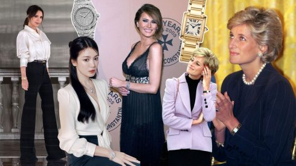

SAU TÚI XÁCH BIRKIN, ĐỒNG HỒ TRỞ THÀNH MỤC TIÊU TIẾP THEO CỦA PHỤ NỮ THỜI THƯỢNG
Theo Beth Hannaway - người đứng đầu bộ phận đồng hồ và trang sức cao cấp tại Harrods, số lượng...
CHUYẾN DU LỊCH PARIS CÙNG NHỮNG BẢN PHỐI “NGƯỢC DÒNG THỜI GIAN” CỦA JENNIE (BLACKPINK)
Jennie (BLACKPINK) đã hoàn thiện diện mạo trong chuyến đi khám phá Paris đầy thơ mộng của mình...

TRIỂN LÃM LADY DIOR AS SEEN BY - DẤU ẤN SÁNG TẠO VIỆT TÔN VINH THIẾT KẾ BIỂU TƯỢNG
Triển lãm Lady Dior As Seen By đã lựa chọn thành phố Hồ Chí Minh làm điểm dừng chân. Là nơi..